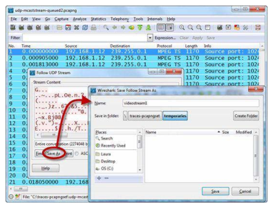
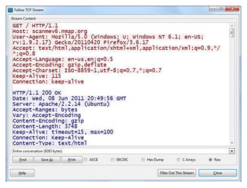
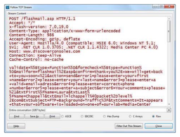
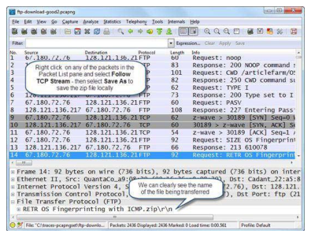
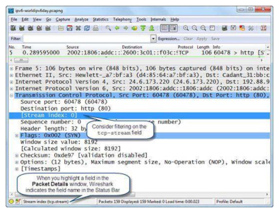
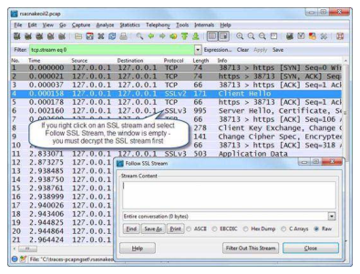
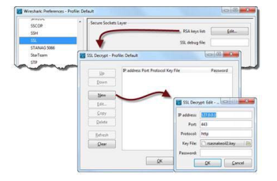
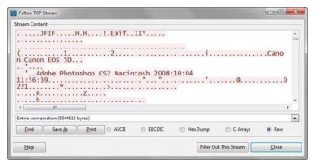

Wireshark Network Analysis 2nd Ed · Laura Chappell
The conversation reconstructed — read the application layer.
Follow TCP, UDP, and TLS streams to reconstruct complete application exchanges and decode data exchanged between hosts.
No questions yet.
No notes yet.
💡THINK FIRST · FOLLOW TCP STREAM
Follow TCP Stream reassembles all TCP segments for a connection and shows the application-layer data. Why does this matter for protocols like HTTP and FTP that span multiple TCP segments?
HINT
A single HTTP response may be split across 20 TCP segments. How does the packet list show this, and what does Follow Stream show?
MODEL ANSWER
In the packet list, a large HTTP response appears as 20+ individual TCP segments with Info column showing 'TCP segment of a reassembled PDU'. The actual HTTP headers and body are not visible without reassembly. Follow TCP Stream stitches all 20 segments together and shows the complete HTTP response as text — headers first (blue = client, red = server in default coloring), then the body. This is how you read credentials sent in HTTP forms, see the actual HTML returned, or identify what data was exfiltrated.
Follow TCP Stream
Right-click any TCP packet → Follow → TCP Stream (or Analyze → Follow → TCP Stream). Wireshark reassembles the entire TCP connection and displays application-layer data.
Stream Window Features
Color coding: blue = client-to-server, red = server-to-client (default)
Display format: ASCII (text), Hex Dump (hex+ASCII), C Arrays, Raw bytes, YAML
Stream selector: arrow buttons to navigate to next/previous TCP stream
Filter button: applies display filter tcp.stream eq N to the packet list
Save As: export the stream content as a file
What You Can See
HTTP usernames and passwords (in plain HTTP)
FTP credentials and file content
SMTP email content and headers
POP3 email retrieval
Any clear-text application protocol
SECURITY NOTEIn a clear-text HTTP or FTP session, Follow TCP Stream shows usernames, passwords, cookies, and email content in full. This demonstrates exactly why encryption is essential — any observer on the network path can read this data.
🧠
MENTAL NOTE
Follow TCP Stream: right-click → Follow → TCP Stream. Blue = client, Red = server. Stream index (tcp.stream) uniquely identifies each TCP connection in the capture. Use 'Save As' to export file content (images, documents) transferred in HTTP or FTP.
📷Figure 153 — open trace file to view
Figure 153. shows the result of following the TCP stream of an FTP command session. By default, Wireshark color codes the conversation in the streams window—red for traffic from the client (the host in

📷Figure 154 — open trace file to view
Figure 154. shows a UDP stream in the background. Upon reassembling the UDP stream, a display filter was created for the UDP conversation - (ip.addr eq 192.168.1.12 and ip.addr eq 239.255.0.1) and (ud

📷Figure 156 — open trace file to view
Figure 156. shows a reassembled web browsing session on World IPv6 Day (June 8, 2011). We can see what browser is used for the browsing session (Firefox), the target (scanmev6.nmap.org) and the OS

📷Figure 157 — open trace file to view
Figure 157. Reassembling an HTTP post session

📷Figure 159 — open trace file to view
Figure 159. shows an FTP communication using a dynamic port number for the data transfer.
Ask a Question
Add a Note
💡THINK FIRST · FOLLOW UDP STREAM
UDP has no connection concept. How does Wireshark define a 'UDP stream' for the Follow UDP Stream feature?
HINT
Without SYN/FIN handshake, how does Wireshark group UDP datagrams together?
MODEL ANSWER
Wireshark groups UDP datagrams by the 5-tuple: source IP, destination IP, source port, destination port, and protocol. All datagrams with the same 5-tuple are considered one 'stream'. For protocols like DNS (each query is a new source port), each query-response pair is a separate stream. For TFTP and RTP, the stream groups all datagrams in the same flow. Unlike TCP stream, UDP datagrams are shown in capture order without reassembly (UDP has no ordering or sequencing).
Follow UDP Stream
Right-click any UDP packet → Follow → UDP Stream. Groups UDP datagrams by 5-tuple and displays them in order.
Unlike TCP stream, there's no reassembly — each UDP datagram is discrete. Useful for:
DNS analysis — see query and response text together
TFTP — see file transfer blocks (TFTP runs over UDP)
SNMP — see MIB values in OID queries and responses
Custom UDP protocols — read raw payload as ASCII or hex
UDP STREAM IDWireshark assigns each UDP flow a stream index (udp.stream). Apply filter udp.stream eq N to isolate that flow in the packet list — same as TCP stream workflow.
🧠
MENTAL NOTE
Follow UDP Stream groups by 5-tuple (not connection-based). No reassembly — datagrams shown in order. Each DNS query-response pair is a separate stream (different source ports). Use for DNS, TFTP, SNMP, and custom UDP protocols to read payload content.

📷Figure 155 — open trace file to view
Figure 155. The Stream Index value is in the TCP header
Ask a Question
Add a Note
💡THINK FIRST · TLS STREAM DECRYPTION
Wireshark can decrypt TLS using either an RSA private key or a pre-master secret log file. What is the fundamental advantage of the SSLKEYLOGFILE approach over the RSA key approach?
HINT
Think about Perfect Forward Secrecy and what happens to session keys if only the server's RSA private key is available.
MODEL ANSWER
RSA key exchange: the client encrypts the pre-master secret with the server's RSA public key. If you have the server's RSA private key, you can decrypt the pre-master secret and derive the session keys. However, if the cipher suite uses ECDHE (Elliptic Curve Diffie-Hellman Ephemeral) — which all modern TLS 1.2+ sessions do for Perfect Forward Secrecy — the session keys are ephemeral and cannot be derived from the RSA private key alone. SSLKEYLOGFILE captures the actual session keys at the moment they're generated in the browser/application, working for ALL cipher suites including ECDHE.
TLS/SSL Stream Decryption
TLS-encrypted traffic appears as opaque ciphertext in the packet list. Wireshark can decrypt it with the right key material.
Method 1: RSA Private Key
Preferences → Protocols → TLS → RSA keys list → add server's private key (PEM format), IP, port, protocol. Works ONLY for RSA key exchange cipher suites (TLS_RSA_*). Fails for ECDHE/PFS ciphersuites.
Method 2: Pre-Master Secret Log (SSLKEYLOGFILE)
Set the environment variable before launching the browser:
export SSLKEYLOGFILE=/tmp/tls-keys.log
Browse normally. The browser writes session keys to the log file. In Wireshark: Preferences → Protocols → TLS → (Pre)-Master-Secret log filename → point to the file.
Works for all cipher suites including ECDHE (TLS 1.2 and 1.3).
After Decryption
Decrypted traffic appears in the packet list with the inner protocol name (HTTP, HTTP/2, etc.). Right-click → Follow → TLS Stream shows the decrypted application data.
ECDHE + SSLKEYLOGFILEFor modern HTTPS: always use SSLKEYLOGFILE. RSA key decryption is a legacy approach that fails for Perfect Forward Secrecy sessions, which is the default for all major browsers since ~2015.
🧠
MENTAL NOTE
TLS decryption: RSA key works only for RSA cipher suites (legacy); SSLKEYLOGFILE works for everything including ECDHE (PFS). Set SSLKEYLOGFILE env var before launching Chrome/Firefox. Configure path in Preferences → TLS. Decrypted traffic shows inner protocol (HTTP/2) in packet list.

📷Figure 160 — open trace file to view
Figure 160. shows the rsasnakeoil2.pcap trace file. We have not configured the SSL protocol with a link to the RSA key so no data is available when we follow the SSL stream.

📷Figure 161 — open trace file to view
Figure 161. Adding the RSA key setting in the SSL preferences
📷Figure 162 — open trace file to view
Figure 162. Follow the SSL stream after applying the RSA key to see the traffic clearly
Ask a Question
Add a Note
Using Streams for Application Analysis
Stream analysis techniques for common scenarios:
Identify Transferred Files
Follow TCP Stream → Save As to extract transferred files from HTTP (images, documents) or FTP sessions. Look for headers identifying the content type (Content-Type: application/pdf).
Credential Hunting
In FTP: USER and PASS commands are in clear text. In HTTP Basic Auth: Authorization header contains base64-encoded credentials (easily decoded). In SMTP AUTH: base64 credentials in the AUTH command. Follow TCP Stream and search for these patterns.
Application Errors
When users report 'the application fails', Follow TCP Stream on the failing session often reveals specific error messages from the server that don't appear in Wireshark's summary columns — database errors, application stack traces, configuration messages.
EXPORT OBJECTSBeyond Follow Stream: File → Export Objects → HTTP extracts all HTTP-transferred objects (images, scripts, documents) from the entire capture at once. File → Export Objects → FTP-DATA extracts FTP file transfers.
🧠
MENTAL NOTE
Stream analysis use cases: (1) read credentials in clear-text protocols; (2) extract transferred files (Save As or Export Objects); (3) read server error messages not shown in packet list Info column; (4) reconstruct email content in SMTP/POP3/IMAP sessions.

📷Figure 158 — open trace file to view
Figure 158. Sometimes you need to extract a file from inside a stream Identify Common File Types Files begin with file identifiers that indicate the application used to create
Ask a Question
Add a Note
TL;DR — CHAPTER 10
Follow TCP Stream reassembles all segments for a connection and shows application-layer data in ASCII or hex — reads credentials, file content, and server errors. Follow UDP Stream groups by 5-tuple. TLS decryption: use SSLKEYLOGFILE (works for all cipher suites including ECDHE/PFS); RSA key only works for legacy RSA cipher suites. Export Objects extracts all HTTP/FTP-transferred files at once.
Review Questions
Q10.1
What does Follow TCP Stream do with multiple TCP segments that carry a single large HTTP response?
HINT
Think about how TCP segments relate to application-layer messages.
ANSWER
Follow TCP Stream reassembles all TCP segments for the connection in sequence, stitching together the fragmented application-layer data into a single view. A 50KB HTTP response split across 35 TCP segments appears as complete HTTP headers followed by the full response body. Client data is shown in blue; server data in red. This allows reading the complete application exchange without manually correlating 35 individual segment packets.
Q10.2
Why does TLS decryption using the server's RSA private key fail for modern HTTPS sessions?
HINT
What cipher suite property prevents RSA private key decryption?
ANSWER
Modern HTTPS uses ECDHE (Elliptic Curve Diffie-Hellman Ephemeral) cipher suites for Perfect Forward Secrecy. In ECDHE, the session keys are generated from ephemeral key pairs negotiated fresh for each session — the server's RSA private key is only used to authenticate the server identity (sign the DH parameters), not to encrypt the session key. Therefore, even with the RSA private key, you cannot derive the session keys for ECDHE sessions. SSLKEYLOGFILE captures the actual ephemeral session keys at generation time, bypassing this limitation.
Q10.3
How would you extract a PDF file transferred over an unencrypted HTTP connection from a Wireshark capture?
HINT
There are two approaches — one manual, one automated.
ANSWER
(1) Automated: File → Export Objects → HTTP. Wireshark lists all HTTP objects transferred in the capture; find the PDF by name or Content-Type and click Save. (2) Manual: right-click a TCP packet from the HTTP session → Follow → TCP Stream. In the stream window, the PDF binary data is visible. Switch to 'Raw' mode, select server data only, Save As with a .pdf extension. Method 1 is faster for multiple files; method 2 works when the automated export misses a file.